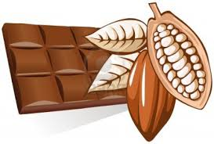

DESARROLLO Y PRODUCCION DEL CACAO EN IRAZOLA
INTRODUCCION:
El cacao es una planta originaria de los trópicos húmedos de América. Su centro de origen está situado en el noroeste de América del Sur, en la zona amazónica. Pertenece a la familia de las Esterculiaceas y su nombre botánico es Theobroma cacao L. Como se observa en el Gráfico Nº 1, el cacao se cultiva por lo general en áreas desde el nivel del mar hasta los 800 metros de altitud. Comercialmente es cultivado dentro de un cinturón relativamente estrecho, alrededor de 15°N y 15°S del Ecuador.
El cacao se cultiva principalmente en África del Oeste, América Central y Sud América y Asia. Según la producción anual los ocho países principales productores cacao en el mundo, en orden descendente, son: Costa de Marfil, Ghana, Indonesia, Nigeria, Brasil, Camerún, Ecuador y Malasia; que concentran el 90% de la producción mundial A principios de los años setenta la producción de cacao se concentraba en Ghana, Nigeria, Costa de Marfil y Brasil. Sin embargo, en la actualidad la producción se ha extendido a otras áreas, como la región del Pacífico.
En el Perú, actualmente se ha despertado un alto interés por el cultivo del cacao debido al alza de precio y a la demanda aun insatisfecha, del mercado internacional y nacional. Cuyos lugares de producción están ubicados en la Amazonía del país.
El desarrollo de la cadena productiva del cacao, desde el cultivo hasta la comercialización, viene siendo apoyada a través de diversas instituciones privadas (sin fines de lucro) y públicas, que canalizan la Cooperación Técnica Internacional, Ciertamente, quedaron al margen otras zonas productoras importantes no vinculadas directamente con el problema cocalero.
Diversos problemas restaron continuidad y efectividad a esos esfuerzos, sin embargo, permitieron dejar claramente establecidos algunos aspectos muy importantes de esta producción: que diversas zonas del Perú tenían condiciones para producir cacao de excelente calidad; que esos atributos de calidad despertaban un gran interés en la industria internacional del cacao; que los problemas que afectan fuertemente al cultivo, principalmente en el aspecto fitosanitario, eran superables con medidas sencillas; y, que la aplicación de la tecnología moderna permitía avizorar progresos sustanciales en la productividad-rentabilidad del cultivo. Este avance permite finalmente, independizar el progreso del cultivo del cacao de las posibilidades limitadas de las empresas nacionales y del mercado interno en la industria chocolatera.